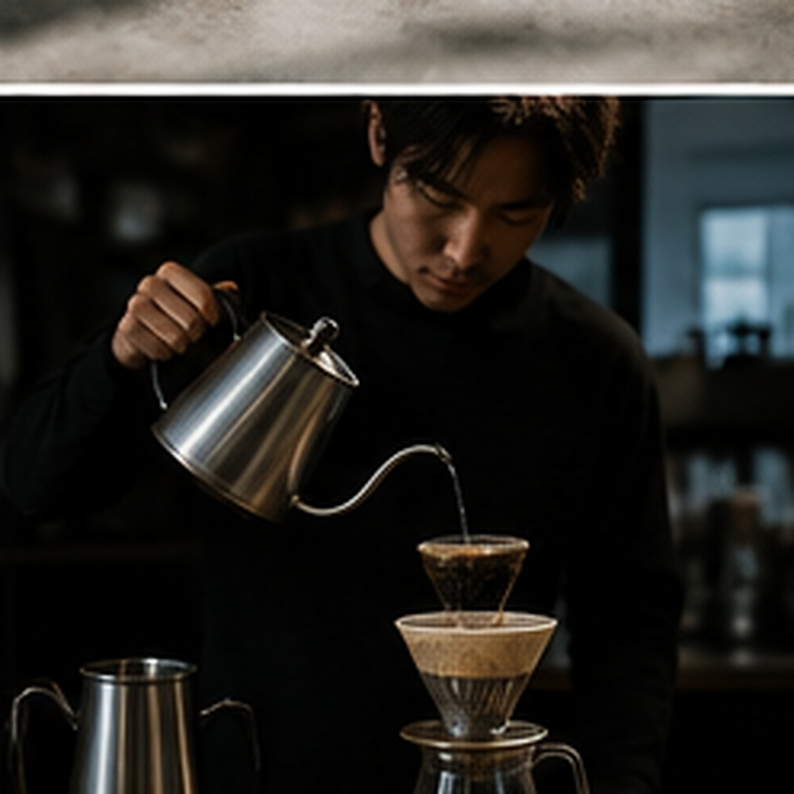

STORY
店主・児玉和也のストーリー

店主の児玉和也氏は、もともとラグビー選手として秋田工業高校で主将を務め、秋田ノーザンブレッツにも所属していました。26歳での引退後、家族と仙台へ移住し、飲食店で3年間修業を積みます。
その中で、料理よりもコーヒーそのものに強く魅力を感じたことがきっかけとなり、2011年7月に08COFFEEを開業しました。
店名の「08」は、ラグビー時代に背負っていたポジション・背番号「ナンバーエイト」に由来しています。競技で培った芯の強さが、いまも一杯ずつ丁寧にコーヒーと向き合う姿勢につながっています。